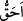

günden beri” demektir.
Âyetteki mescid ile Rasûlullah (s.a.)’in Medine’deki mescidinin kastedildiğini
söyleyenler de olmuştur. Fakat Kubâ mescidinin kastedilmiş olması daha meşhur ve
kıssaya daha uygundur. Çünkü mescid Kubâ’dadır. Dolayısıyla Mescid-i Dırar’ın Kuba
Mescidi ile mukayese edilmesi, Medine’deki Mescid-i Nebevî ile mukayese
edilmesinden daha uygundur. Haddâdî demiştir ki: Takvâ üzere kurulmuş olan mescid
ile her iki mescidin, yani Hz. Peygamber (a.s.)’ın mescidi ve Kubâ Mescidi’nin
kastedilmiş olması da mümkündür.
“Allah Teâlâ bu âyette niçin Kubâ mescidi hakkında “içinde namaz kılmana elbette
daha lâyıktır.” buyurmuştur? Habûki zarar vermek, inkar etmek, ayrılık sokmak ve
Allah ve Rasûlü ile savaşmış birisini beklemek gibi dört kötülük, diğer mescidde
(Mescid-i Dırar’da) namaz kılmasının cevazını zâten men etmektedir.” denilirse, bunun
cevabı şöyledir:
Bu ifade sözün akışına uygun olarak gelmiştir. Yani, “Eğer Mescid-i Dırar’da namaz
kılmanın cevazını farz etmiş olsaydık, Takvâ Mescidi’nde namaz kılmak daha doğru ve
daha uygun olurdu.” mânâsınadır. Çünkü Takva Mescidi muhkem bir temel üzere
kurulmuştur. Mescid-i Dırar’da namaz kılmak ise bâtıldır. Çünkü kötü maksadlar için
bina edilmiştir.
Âyetteki “ __WORD__ (duha uygundur)” kelimesinin üstünlük bildirmek için değil, bilakis
“doğrudur, yakışır” mânâsına olduğu da söylenebilir. Nitekim Molla Ebüssuûd demiştir
ki: “__WORD__” olması ile ona lâyık olması, yaraşması kastedilmektedir. Çünkü Mescid-i
Dırâr’ın, içerisinde namaz kılınmayı hak etmesi asla söz konusu değildir. İsm-i tafdil
(üstünlük) sıygası ile ifade edilmiş olması ise Takvâ Mescidi’nin bizatihi fazîletinden
ve kendi kemâlinden ileri gelmektedir. Ya da üstünlük, mescidi bina eden kimsenin ve
akidede ona tâbi olanların iddia ve düşünceleri itibariyledir. Bu yorum âyetin devamına
daha uygun düşmektedir.
“Onda” takvâ üzere tesis edilmiş olan mescidde, günah ve kötü huylar gibi gerek
bedeni gerekse ameli bütün necislerden ve pisliklerden mutlak olarak “temizlenmeyi
seven adamlar” yâni Ensâr “vardır.”
Bu cümle başlangıç cümlesidir (isti’nâfiyye). Önceki cümle Mescid-i Kubâ’nın mahal
îtibarıyla namaz kılmaya daha uygun olduğunu açıkladıktan sonra bu cümle de durum
îtibarıyla Kubâ Mescidi’nin Hz. Peygamber (a.s.)’ın içerisinde namaz kılmasına daha
lâyık olduğunu açıklamaktadır.
“Allah da çok temizlenenleri sever.” yâni, çok sevenlerden râzı olur. Sevenin
sevdiğini kendisine yaklaştırdığı gibi onları yüce katına yaklaştırır.
Rivâyet edildiğine göre bu âyet nâzil olunca Rasûlullah (s.a.) beraberinde Muhacirler
olduğu halde Kubâ mescidine yürüyerek gitti ve Kubâ mescidinin kapısında durdu.
Ensâr orada oturuyordu. Hz. Peygamber onlara: